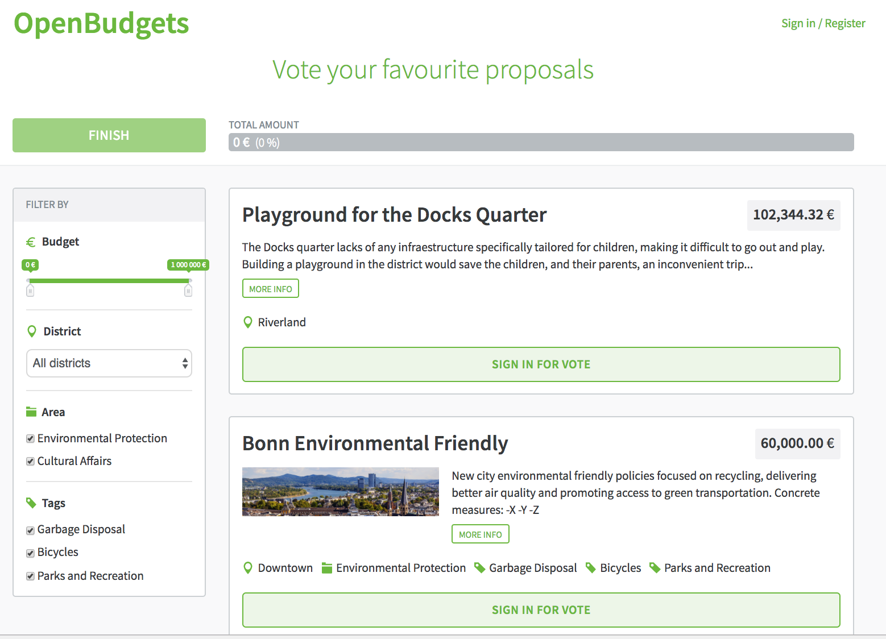

OpenBudgets.eu (OBEU) provides an open-source software framework and accompanying Software-As-A-Service (SAAS) platform for supporting financial transparency, thus enhancing accountability within public sectors as well as influencing corruption prevention. To this end, a scalable framework for multi-stakeholders is developed, with the aim of maximizing flexibility and ease of use. The core features of the OBEU platform are: (1) A semantic data model used to integrate heterogenous budget data, giving a pre-defined structure to the input data; (2) a library of visualisation tools with a user-friendly interface, which enables stakeholders to visualise available data in different granularity and modality; (3) a library of data mining and comparative analysis tools, which enables the aggregation of existing data in order to obtain new outcomes and discover recent trends and patterns, and potentially forecasting budget measures; and (4) an interface for feedback and citizen engagement which enables users to evaluate, discuss and give feedback on the provided data. A demonstration of the OBEU platform and portal is available at
http://apps.openbudgets.eu/
and can be easily embedded into municipalities’ websites.
Introduction
Corruption is a global issue that seriously harms the economy and society, affecting people’s lives and often infringing fundamental human rights. The European Commission Anti-Corruption Report estimates that corruption can be estimated to cost the European Union economy 120 billion Euro per year
[4]
. One possible solution against corruption is to increase financial transparency. The OpenBudgets.eu project is a research project funded by the EU H2020 framework no. 645833 from May 2015 to October 2017. The OBEU platform and the corresponding open-source technology aim to support financial transparency, government efficiency, and citizen engagement, by developing an integrated platform as illustrated in
Figure 1
.
Figure 1.
Overview of the OBEU platform.
Several challenges are encountered for developing OBEU platform:
Heterogeneous budget data
. Budget data by different municipalities have their own format, language, structure, terminologies, and abbreviations.
Complex visualization of budget data
. The second challenge is to find attractive and unified ways to visualize heterogeneous and multi-dimensional data.
Analysis of budget data
. Different municipalities may use their own accounting methods, comparison among semantically heterogeneous budget data. Therefore, identifying effective ways to analyze and compare this data is another big challenge.
Software-As-A-Service infrastructure
. The fourth challenge is to identify an easy solution to integrate the developed system into the platform of different stakeholders.
As a solution to these challenges, we developed a platform using Semantic Web technologies and a distributed container networking model based on the Docker platform
1
. In the following sections, more details about the data model, the software architecture and the developed components are provided.
Managing Heterogeneous Budget Data
Our solution to the data heterogeneity challenge is first to define and develop a standard budget data vocabulary and data model. Second, to develop with fully automatic and computer-aided tools, which transform heterogeneous budget data into the standardized data model.
OBEU Data Model
OpenBudgets.eu (OBEU) data model
2
is developed to represent budget datasets across different levels and public administrations, based on the Data Cube Vocabulary (DCV)
3
, a W3C Recommendation.
In DCV, every dataset is required to have a
Data Structure Definition
(DSD), which provides information regarding measures, dimensions, or attributes available on the datasets.
Measure
determines the type of value in the datasets.
Dimension
determines possible dimension used to explain the observed measure. When combined, dimensions uniquely determine an observation.
Attribute
determines additional characteristics in an observation, but not a part of the component, which would uniquely define an observation
[3]
.
In the OBEU platform, the processed data are specific on spending and budget datasets. DCV vocabulary is adapted to represent the datasets in the OBEU, by extending additional dimension properties, attribute properties, optional properties and measure properties. The full reference of this data model is available in the OBEU data model documentation
[1]
.
Budget and spending datasets are transformed according to this RDF data model. This transformation unifies the previously heterogeneous formats provided by public administrations. Depending on the structure of the dataset, the transformation can be done either using automatic transformation tools or manually developing RDF transformation (ETL) pipelines, which allow users to define specific mapping rules between the dataset and the OBEU data model.
Automatic Transformation to RDF
Automatic transformation can be done only if the format and the structure of the dataset is supported by the OBEU platform. The automatic transformation tools, which have been developed as part of the project, consist of three main components: (i) OpenSpending Packager
4
, (ii) LinkedPipes
5
, and (iii) FDP2RDF
6
transformation pipeline.
The OpenSpending Packager is a tool for transforming raw datasets from the CSV (Comma Separated Values) tabular format into a format called Fiscal Data Package (FDP)
7
. The tool presents a user-friendly interface guiding users through the transformation process. FDP is a JSON-based format, which consists of the original CSV data augmented with additional metadata. The metadata incorporates available dimensions, attributes, measures, as well as descriptive metadata. FDP is a widely used format for representing budget and spending data which was developed by the OpenSpending project and the Open Knowledge International
8
. The content of each FDP JSON file can be used as a basis (as a contextual and controlled source) for the automatic transformation into RDF. This transformation is performed by the FDP2RDF pipeline.
The FDP2RDF transformation pipeline itself is built using LinkedPipes. LinkedPipes is a tool to convert the datasets to RDF by developing ETL (Extract Transform Load) data transformation pipelines. For this specific purpose of FDP to RDF transformation, the custom and reusable FDP2RDF pipeline has been developed.
For budget and spending datasets in other formats, we need to transform them into CSV files, as OpenSpending Packager only supports CSV datasets with the labeling dimensions provided within the datasets. For XML files, we developed an automatic CSV extractor package, which is publicly available on GitHub
9
.
Customised ETL Pipelines
Manually developed pipelines provides a flexibility to transform datasets, which have their unique structure not compatible with any standard and/or the OBEU data model. The users are required to understand the content of their datasets and the basics of RDF and SPARQL queries. The users should also develop the DSD for their data set. Despite the technical complexity, developing the pipeline manually decrease the risk of errors that can occur during an automatic transformation process.
Interlinking Budget Data
One of the benefits of using semantic technologies is to enable seamless integration of heterogeneous datasets. To realize this integration, interlinking efforts between different classifications should be performed. In the budget and spending data context, classification is denoted by pre-defined notations, including labels and descriptions. For example, functional classification denotes functional usage of funding; administrative classification denotes how public offices manage their funds. Within OpenBudgets.eu, the interlinking across different classifications enables comparative analysis across different semantic datasets. Classifications generated by this interlinking process are publicly available
10
[2]
.
OBEU Architecture
Components of the Openbudgets.eu platform are illustrated in
Figure 2
. The OpenSpending project contributed, as part of OpenBudgets.eu, with some components included in the architecture. Specifically, the Packager and the Viewer, which have been adapted to the OBEU infrastructure.
Figure 2.
Software architecture of the OBEU platform.
LP-ETL
: FDP datasets can be transformed into RDF by triggering the aforementioned FDP2RDF pipeline based on the LinkedPipes ETL tool (LP-ETL in Figure 2). Users can also manually perform such transformations using LinkedPipes. The result of this transformation is stored into the Virtuoso triple store. RDF dump files are also produced as backup.
Alignment UI:
a tool which enables users to align (or interlink) two different classifications. The resulting alignment is also stored in the Virtuoso triple store.
Rudolf:
a backend API that serves data requests from different OpenBudgets components, mainly Data Analytics and Mining (DAM) components and GUI components.
DAM (Data Analysis and Mining):
the central component for managing data-mining analysis, allocating data-mining tasks at different servers. Currently, tasks include outlier detection, rule mining, descriptive statistics, time-series and key performance indicator analysis.
While the previous components were mainly target experts or administrators, the following components involve also the end users.
Packager:
a tool for representing and transforming raw tabular data and providing metadata by mapping the columns in the raw datasets. The Packager guides users in producing the raw dataset enriched with additional JSON metadata in a format called Fiscal Data Package (FDP).
Viewer:
a tool to visualize datasets in FDP and OBEU RDF format. There are several visualization possibilities available within the Viewer, and users can filter the datasets according to different dimensions using a graphical user interface.
RDF Browser:
a GUI to browse the structure of RDF triples available on the OBEU Virtuoso server.
Microsite
: a configurable website containing OBEU Viewer visualizations that can be embedded on external web pages.
Indigo:
a GUI that allows browsing/searching of datasets and performing analytical features of them.
Participatory Budgeting:
a web portal leveraging participatory budgeting for public administrations and citizens.
Distributed Data Analysis and Mining
Data analysis and mining modules of the OBEU platform can be distributed at any places currently are located in three places: (1) UEP server
11
, (2) OKFGR server
12
, (3) Fraunhofer server
13
. The central control component of Data Analysis and Mining (DAM)
provides a unified functional entry point to process users’ requests. The DAM is implemented using Python Flask and utilizes available technologies such as EasyMiner, R and Open CPU for data mining algorithms. The DAM architecture and the functional communication with other modules is illustrated in
Figure 3
.
Figure 3.
DAM and its functional communication with other modules.
Visualizations for Budget Data
OBEU Viewer is the main front-end for visualization of the OBEU datasets (Figure 4). After selecting the dataset from the Indigo’s dataset browser, the user is redirected to OBEU Viewer
14
, which is a customization of the OpenSpending Viewer
15
. The main functionality is to visualize aggregated values of the particular dataset.
After users select a visualization, the OBEU Viewer will read the dataset’s DSD and present available dimensions in the left pane of the Viewer. Users can filter dimensions, search particular notation/classification, and sort data, which are useful for table-like visualizations. The available visualizations are Bar chart, Line chart, Treemap, Geomap, Pie chart, Pivot table, Radar chart. Figure 4 illustrates Bonn Budget 2019 treemap.
Figure 4.
A treemap visualization of Bonn Budget 2019.
Microsite as a SAAS
The OBEU Microsite
16
is an independent software, which can be typically embedded into municipality’s website, so that users can view, and comment on budget data (Figure 6). Data and visualization software does not need to be hosted by the municipality, rather displayed on the fly using a remote OBEU server instance. The Microsite is configurable in terms of colors, language, datasets, and arrangement of the views.
Participatory Budgeting
The OpenBudgets Participatory Budgeting (OBEU-PB)
17
is an independent open-source software developed by CIVIO
18
to enable citizens to influence budget allocation. It provides a voting process where citizens can vote for their preferred proposals. The city council administrators will set up a mechanism for their citizens to participate in the budget voting. Each participant is assigned a number, which represents the public budgets that she/he can allocate to the preferred project. Citizens can learn to use this tool, understand the budget cycle, influence the budget allocation, and monitor the usage of the budget. A demo of OBEU-PB depicted in
Figure 5
is available online
19
.

Figure 5.
Citizens vote for their favorite budgeting proposals.
Conclusions
We presented OpenBudgets.eu, an EU H2020 project supporting financial transparency, enhancing accountability within public sectors as well as influencing corruption prevention. A platform to manage fiscal data, such as budget and spending datasets, has been developed and it is currently undergoing its final testing and dissemination phase. The platform integrates semantic technologies, data mining and analytics as well as visualizations to improve the consumption and analysis of open budget and spending data. The tools described in this paper are fully open-source and available online. Three different municipalities (Paris, Bonn and Thessaloniki) with real datasets are currently testing the platform. This will improve the final version of the platform and validate the project use-case scenarios.
Acknowledgements
EU H2020 funds OpenBudgets with no. 645833 (OpenBudgets.eu). The first author is supported by DAAD.
References
Dudas M., Klímek J., Kučera J., Mynarz J., Sedmihradská L., Zbranek J. (2016): OpenBudgets.eu - Deliverable D1.5 - Final release of data definitions for public finance data,
http://openbudgets.eu/assets/deliverables/D1.5.pdf


{kind=link}
{kind=link}
{kind=link}
{kind=link}
{kind=link}